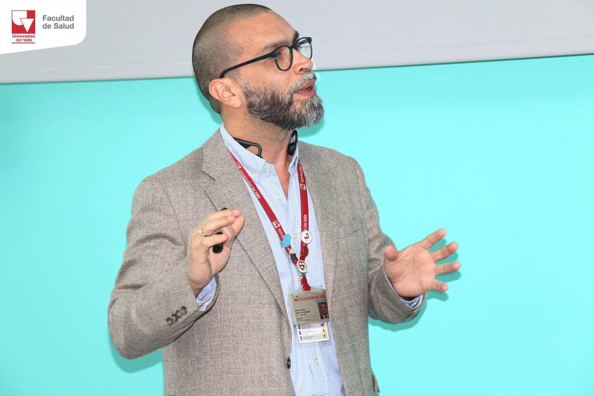
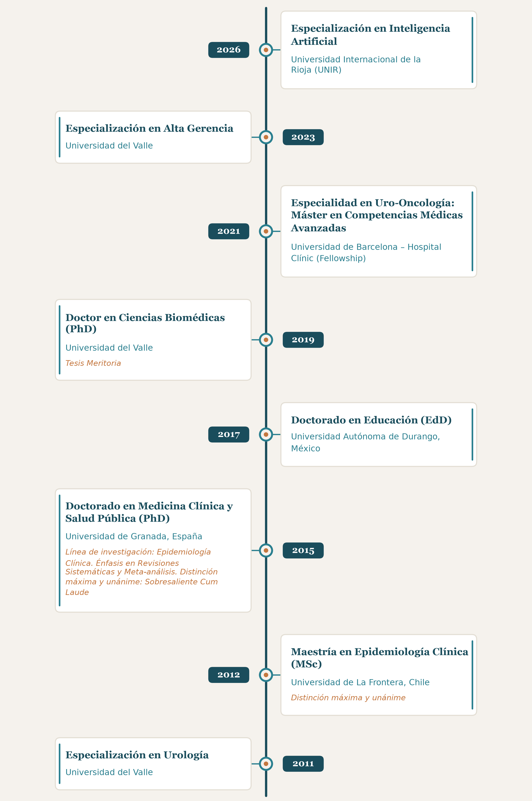

Parnham A, Albersen M, Ayres B, (García-Perdomo HA) et al.
European Association of urology and american society of clinical oncology guidelines on penile cancer: a summary of the 2026 guidelines update. Eur Urol 2026
García-Perdomo HA, Davila-Raigoza A, Spiess PE.
Urethral cancer management in contemporary practice: a review. Urol Oncol 2026
García-Perdomo HA, Tagawa S.
Main genomic findings in penile cancer: An update. Clin Genitourin Cancer 2026;24(2):102493
García-Perdomo HA, Davila-Raigoza A, Lawrence M, Crabb S.
What can we learn from an international survey on the care of primary urethral cancer. Urology 2026;210:8-12
García-Perdomo HA, Davila-Raigoza A, Summers E, Billingham L.
Urethral Cancer: a comprehensive review endorsed by the global society of rare genitourinary tumours. BJU Int 2024
Reina Y, Villaquiran C, García-Perdomo HA.
Advances in high-risk localized prostate cancer: Staging and management. Current Problems in Cancer 2023;47:100993